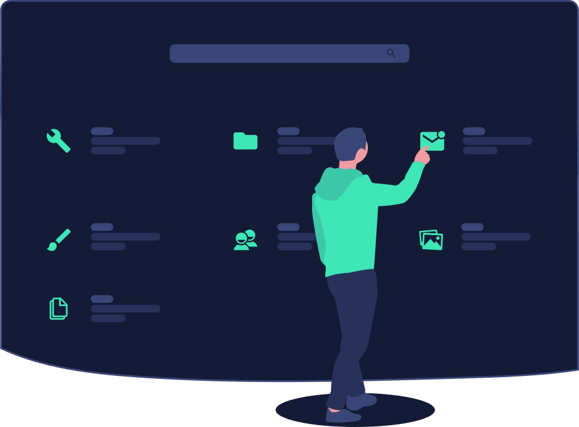
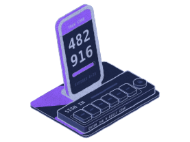
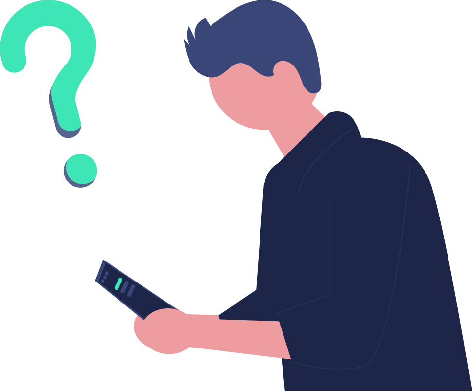
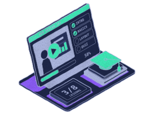
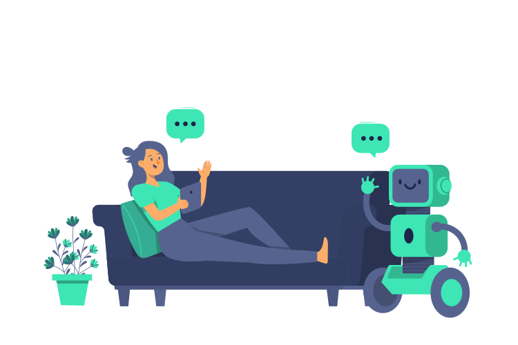
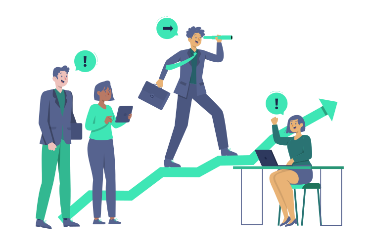
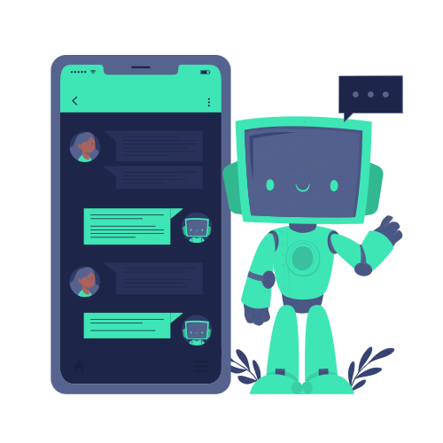
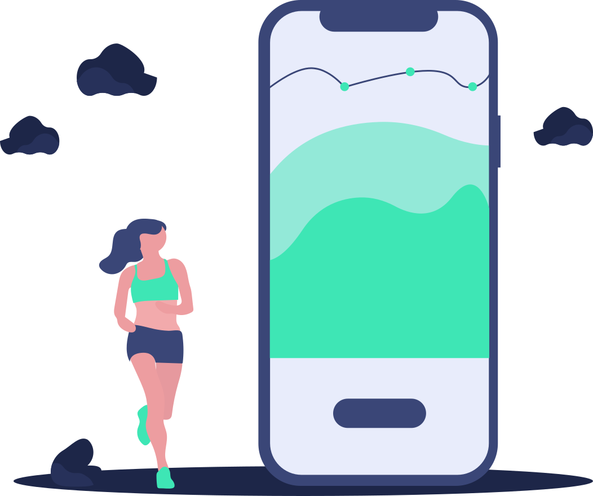
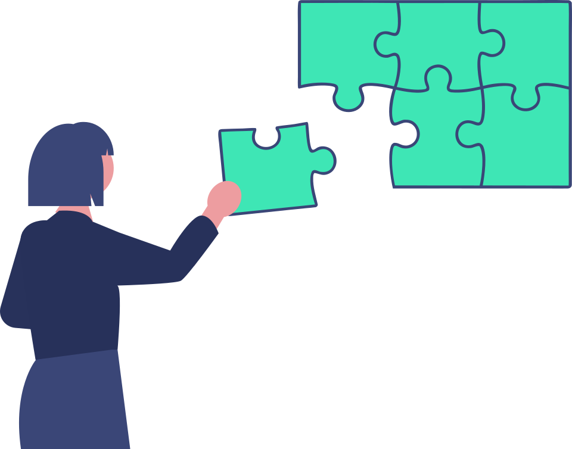

01Вступний інструктаж з БЖД. Інформація, повідомлення, дані, інформаційні процесиє матеріали▼
Робота за комп’ютером безпечна, якщо дотримуватися простих правил: правильна посадка, перерви для очей, обережність з електрикою. Інформація — це відомості про об’єкти та явища; щоб її передати, ми формуємо повідомлення, а щоб опрацювати на комп’ютері — подаємо у вигляді даних. Усе, що відбувається з інформацією, — це інформаційні процеси: збирання, зберігання, опрацювання, передавання та захист.
Ключові поняття
- Повідомлення
- форма подання інформації: текст, звук, зображення, відео
- Дані
- інформація, закодована для зберігання й опрацювання комп’ютером
- Інформаційний процес
- дія з інформацією: збирання, зберігання, опрацювання, передавання
- Правило 20-20-20
- кожні 20 хв дивитися 20 секунд на об’єкт за 6 м (20 футів)
Матеріали на сайті
Корисні ресурси
- Закон України «Про інформацію» — офіційне визначення інформації та прав на неї
- Вікіпедія: Інформація — історія поняття та види інформації
Інструменти
02Інформаційні системи як важливі складники й ознаки сучасного суспільстває матеріали▼
Інформаційна система (ІС) — це поєднання людей, техніки, програм і даних, яке збирає, зберігає та видає потрібну інформацію. Ми щодня користуємося ІС: електронний журнал, Дія, онлайн-банкінг, сервіси доставки. Кількість і якість таких систем — одна з головних ознак інформаційного суспільства.

Ключові поняття
- Інформаційна система
- люди + апаратне забезпечення + програми + дані
- Інформаційне суспільство
- суспільство, де більшість працює зі створенням, обробкою й передаванням інформації
- Е-урядування
- надання державних послуг онлайн
Матеріали на сайті
Корисні ресурси
- Портал Дія — приклад державної ІС: понад сотню послуг онлайн
- Prozorro — відкрита система публічних закупівель
Інструменти
03Сучасні інформаційні технології та системиє матеріали▼
Інформаційна технологія — це набір методів і засобів, якими ми збираємо, опрацьовуємо та передаємо інформацію. Сьогодні це хмарні сервіси, мобільні застосунки, геоінформаційні системи, системи автоматизації на виробництві й транспорті. Важливо вміти обрати технологію під задачу: для спільного документа — хмарний редактор, для маршруту — навігатор, для обліку — базу даних.
Ключові поняття
- Хмарні технології
- програми й дані зберігаються на віддалених серверах і доступні з будь-якого пристрою
- ГІС
- геоінформаційна система — карта + база даних про об’єкти на ній
- Автоматизована система
- система, де частину дій замість людини виконує комп’ютер
Матеріали на сайті
Корисні ресурси
- Google Arts & Culture — приклад того, як ІТ змінюють доступ до культури
- OpenStreetMap — відкрита ГІС, яку створюють волонтери
Інструменти
04Людина в інформаційному суспільстві▼
В інформаційному суспільстві людина водночас є і споживачем, і творцем інформації. Від неї вимагаються інформаційна культура та медіаграмотність: перевіряти джерела, відрізняти факти від думок, поважати авторське право й чужі персональні дані. Цифровий слід, який ми залишаємо в мережі, впливає на репутацію та майбутнє працевлаштування.
Ключові поняття
- Медіаграмотність
- уміння критично сприймати й перевіряти інформацію
- Цифровий слід
- усі дані про людину, що залишаються в мережі
- Фейк
- неправдива інформація, подана як правдива
Корисні ресурси
- Фільтр — проєкт з медіаграмотності — державна ініціатива з медіаграмотності
- StopFake — розбір реальних фейків
Інструменти
05Проблеми інформаційної безпекиє матеріали▼
Інформаційна безпека — це захищеність інформації від крадіжки, зміни чи знищення. Три головні властивості, які ми захищаємо: конфіденційність (бачить лише той, кому можна), цілісність (дані не змінено) і доступність (дані є, коли потрібні). Найслабша ланка часто — людина: простий пароль, підозріле посилання чи чужа флешка.

Ключові поняття
- Конфіденційність
- доступ до даних мають лише уповноважені особи
- Цілісність
- дані не змінені без дозволу
- Доступність
- дані й сервіси працюють, коли потрібні
- Двофакторна автентифікація
- вхід за паролем + кодом із телефону
Матеріали на сайті
Корисні ресурси
- Перевірка безпеки Google-акаунта — покроковий аудит свого акаунта
- Have I Been Pwned — чи потрапляла твоя пошта у витоки даних
Інструменти
06Загрози при роботі в Інтернетіє матеріали▼
Основні загрози в мережі: фішинг (підроблені сайти й листи), шкідливі програми, шахрайство в соцмережах і месенджерах, кібербулінг. Захист простий, але працює лише разом: перевіряти адресу сайту, не відкривати невідомі вкладення, оновлювати програми, вмикати двофакторну автентифікацію.

Ключові поняття
- Фішинг
- виманювання паролів і даних карток через підроблені сайти й повідомлення
- Шкідливе ПЗ
- віруси, трояни, програми-вимагачі, шпигуни
- Соціальна інженерія
- маніпулювання людиною, щоб вона сама віддала дані
Матеріали на сайті
Корисні ресурси
- Google Phishing Quiz — тренажер: розпізнай фішинговий лист
- Кіберполіція України — куди звертатися, якщо стали жертвою шахраїв
- Be Internet Awesome (Interland) — гра про безпечну поведінку онлайн
Інструменти
07Навчання в інтернеті▼
Онлайн-навчання буває синхронним (живий урок у Zoom/Meet) і асинхронним (відеокурс у зручний час). Хороший онлайн-курс має чітку програму, практичні завдання, зворотний зв’язок і сертифікат. В Україні є безкоштовні платформи з якісними курсами українською.

Ключові поняття
- Синхронне навчання
- викладач і учні працюють одночасно
- Асинхронне навчання
- матеріали доступні будь-коли
- MOOC
- масовий відкритий онлайн-курс
Корисні ресурси
- Дія.Освіта — безкоштовні курси цифрової грамотності й професій
- Prometheus — українська платформа онлайн-курсів
- EdEra — онлайн-освіта українською
- Khan Academy — математика, інформатика, науки
Інструменти
08Професії майбутнього — аналіз тенденцій на ринку праці▼
Автоматизація та штучний інтелект змінюють ринок праці: рутинні операції виконують машини, а людині лишаються творчість, комунікація та керування технікою. Навіть робітничі професії стають цифровими — діагностика авто через комп’ютер, ЧПК-верстати, електронна логістика. Аналізувати тенденції можна за вакансіями: які навички найчастіше вимагають роботодавці.

Ключові поняття
- Soft skills
- навички спілкування, командної роботи, критичного мислення
- Hard skills
- професійні технічні навички
- Навчання впродовж життя
- постійне оновлення знань протягом кар’єри
Корисні ресурси
- Work.ua — аналіз вакансій і вимог роботодавців
- Robota.ua — ще один великий сайт вакансій
- Всесвітній економічний форум — щорічні звіти «Future of Jobs»
Інструменти
09Роль інформаційних технологій в роботі сучасного працівника▼
Сучасний працівник будь-якої професії користується ІТ: електронна пошта й месенджери, хмарні документи, спеціалізовані програми (діагностика, облік, навігація). Цифрові навички підвищують продуктивність і цінність працівника на ринку праці. Важливо також дотримуватися цифрової етики та безпеки на робочому місці.

Ключові поняття
- Цифрові компетентності
- уміння ефективно й безпечно користуватися цифровими технологіями
- Хмарна співпраця
- спільна робота кількох людей над одним документом онлайн
- Цифровий робочий простір
- набір сервісів для роботи: пошта, календар, диск, чат
Корисні ресурси
- Дія.Освіта: цифрова грамотність — тест і курси цифрових навичок
Інструменти
10Поняття про штучний інтелект▼
Штучний інтелект (ШІ) — це програми, які виконують завдання, що зазвичай потребують людського мислення: розпізнавання образів, мови, прийняття рішень. Більшість сучасного ШІ — це машинне навчання: модель «вчиться» на прикладах і знаходить закономірності. ШІ — потужний помічник, але він може помилятися, тож результати треба перевіряти.

Ключові поняття
- Машинне навчання
- навчання програми на прикладах замість ручного програмування правил
- Нейронна мережа
- модель, натхненна будовою мозку
- Генеративний ШІ
- ШІ, що створює текст, зображення, музику
- Промпт
- запит-інструкція для ШІ
Корисні ресурси
- Elements of AI — безкоштовний курс про основи ШІ
- Quick, Draw! — гра: нейромережа вгадує твій малюнок
Інструменти
11Smart-технології та технології колективного інтелекту▼
Smart-технології — це «розумні» пристрої та системи, що збирають дані датчиками й самі ухвалюють прості рішення: розумний дім, фітнес-браслет, розумний світлофор. Інтернет речей (IoT) об’єднує такі пристрої в мережу. Колективний інтелект — це знання, створене спільно багатьма людьми: Вікіпедія, OpenStreetMap, відгуки, наукові проєкти волонтерів.

Ключові поняття
- Інтернет речей (IoT)
- мережа пристроїв, що обмінюються даними без участі людини
- Smart-пристрій
- пристрій з датчиками, підключенням до мережі та автоматикою
- Краудсорсинг
- розв’язання задачі силами великої кількості людей
Корисні ресурси
- Zooniverse — наукові проєкти, у яких може взяти участь кожен
- Вікіпедія: Інтернет речей — огляд технології
Інструменти
12Тематична атестаціяатестаціяє матеріали▼
Перед атестацією повтори: інформація й дані, інформаційні процеси та системи, інформаційне суспільство, безпека в Інтернеті, онлайн-навчання й професії, ШІ та Smart-технології.
Матеріали на сайті

Перевір себе з розділу 1
10 випадкових карток із ключовими поняттями розділу. Що не згадав — підкажемо, де повторити.
🃏 Почати картки